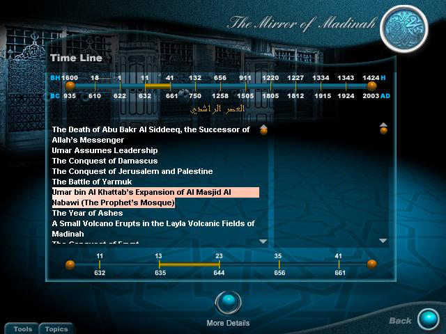
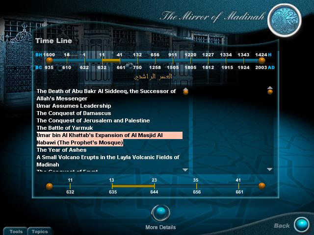
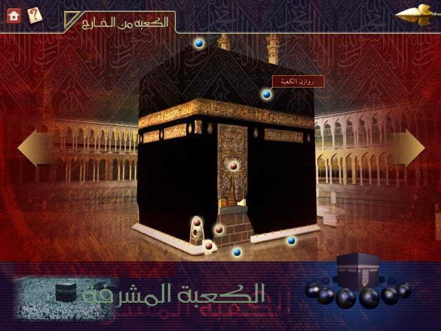
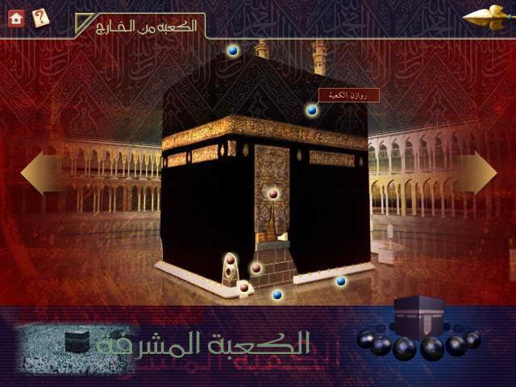

Khaled Atmaz Alsibai
Software Developer
Seeking employment as Web Developer | Seattle, WA
Summary
More than 13 years experience in the field of software development, 8 years in multimedia design and development, professional photography, interface design and advertising. Highly motivated, focused, reliable, organized, excels both on a team or individually. interests include UX, HTML, CSS, JavaScript, Bootstrap,responsive web development, Git and GitHub, Browser Sync, multimedia development, project management, photography, image retouching and manipulation.
Skills
Experience
Continuing Education & Professional Development
September 2015 - Present (1 year, 3 months) | Greater Seattle Area
Recently relocated to United States, I am seeking permanent residency status. I recently was granted my work permit and have been keeping busy by volunteering in local organizations and studying web development. I am seeking employment as a junior front-end web developer where I can build web applications and work with any team to resolve technical problems and meet clients' requirements.
Co Founder & COO
April 2010 - September 2015 (5 years, 6 months) | Jeddah, Saudi Arabia
FOKS Creative House provided both photography and advertising services to direct clients, startups and advertising agencies. The Company was established in 2010 and closed in 2015 when I immigrated to the United States of America.
As manager of the commercial photography studio, I consulted with clients both before and after each project to establish rapport and ongoing relationships, encourage communication and provide the best service and product possible. I oversaw photoshoots from initial staffing through final product delivery for advertising agencies and independent businesses.
Through networking I engaged with local photographers, event planners, hair stylists, modeling agencies, food stylists and venue rental & sales companies to discuss local business activities, plan and execute special events. I researched and implemented effective brand exposure techniques and client interaction through social media platforms such as Facebook, Pinterest, Twitter and Instagram.
I worked with creative directors to develop design concepts and reviewed artwork to ensure conformity to the clients' standards and specifications and to provide an end product that met each client's time and budget requirements.
Multimedia Project Manager
January 2003 - March 2010 (7 years, 3 months) | Jeddah, Saudi Arabia
I led the multimedia design and development team to develop DVD-based multimedia projects utilizing Adobe Director. I worked with 3D artists and graphic designers to create interfaces and workflows that ensured the best UX/DX possible.
Utilizing Microsoft Access and V12 engine, I engineered the required database for each project using third party extras to support the project development, including INM's Impressario, PrintOmatic, V12 and Buddy API.
As team leader I directed the media team while on location in multiple locales for the production of content for the media bank. Also I collaborated with Adobe Flash designers and developers to create Adobe Flash projects to be implemented in the Adobe Director projects.
Project Screenshots

 


Multimedia Designer & Developer
April 2000 - April 2002 (2 years, 1 month) | Jeddah, Saudi Arabia
I provided multimedia design and development of CD-based multimedia projects utilizing Macromedia Director. I worked with 3D artists and graphic designers to create interfaces and workflows that ensured the best UX/DX possible.
Utilizing Microsoft Access and V12 engine, I engineered the required database for each project using third party extras to support the project development, including INM's Impressario, PrintOmatic, V12 and Buddy API.
Collaborating with Adobe Flash designers and developers, my team created Adobe Flash projects to be implemented in the Adobe Director projects, and to ensure compatibility and proper code communication.
Project Screenshots

 

IT Manager and Centura (SQLBase) Software Developer
April 1997 - February 2000 (2 years, 11 months) | Jeddah, Saudi Arabia
As a team member I modified the company's existing software and developed new products from the ground up using Centura. I created and optimized SQL queries, developed, tested, and tuned database code and information, synchronized the database with the head office mainframe, and designed and maintained SQL scripts to update and create new reports. I implemented maintenance and installation of the servers and networks, installed new workstations and printers, and ensured network stability.
I met on a regular basis with my team to articulate project scope and expectations and created a monthly report of recommendations for network upgrades and enhancements. I provided technical support and guidance to in-house users by hosting monthly workshops and training.
Education
Certifications

Volunteering
Computer Lab Instructor
Seattle Goodwill Industries
August 2016 - Present
The job of Computer Lab Instructor was established for the purpose/s of maintaining the operation of a computer lab; and instructing students and staff in the use of computer lab technology and software applications; and monitoring students activities in the computer lab.